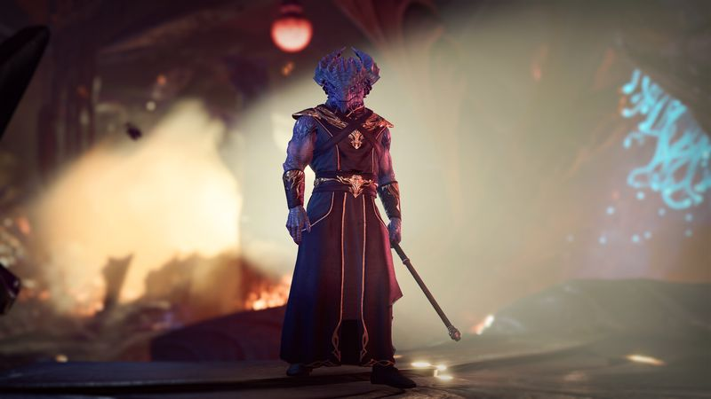
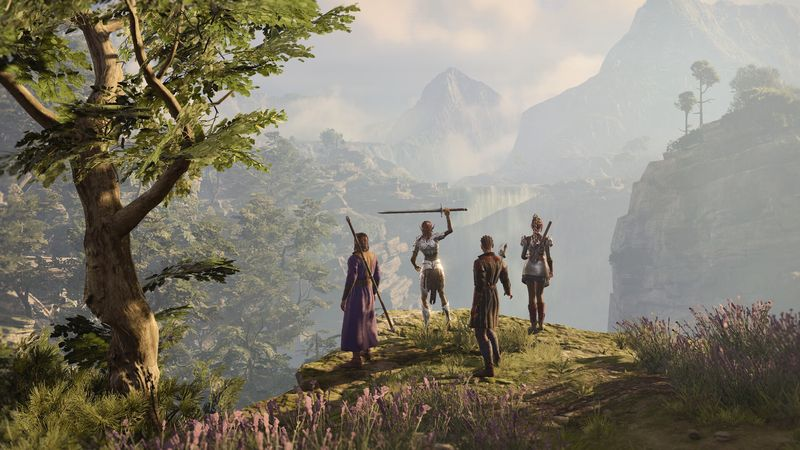

The thirty-second version
The RPG our whole marriages survived.
Rolled a nat 20 on the sentence 'I'll just try it for an hour'.
Baldur's Gate 3 is the biggest RPG any of us has played since we were young enough to have time to play RPGs, and it earns every single hour. The turn-based combat is honest D&D, the writing is genuinely funny, and the choices matter in a way modern RPGs mostly pretend at. It is the closest thing to a religious commitment we can recommend.
Okay, what is this thing?
Astarion asks to bite your neck approximately six hours in and one of us said yes purely to see what happened, which turned out to be a fully motion-captured conversation with consequences we were still paying off in Act 3. This is the entire game. You do a small stupid thing, and thirty hours later a bard sings a song about it in a tavern. It's ridiculous. It's the point.
Under the fanfic energy is a real, hard, honest tactical RPG. Positioning matters. Elevation matters. Grease matters embarrassingly a lot. Each fight is a puzzle you can approach through spells, stealth, shove-off-a-cliff, or, memorably in Act 2, chucking a lit oil barrel at a boss's feet. That the co-op works at all is a small miracle. That it works this well is genuinely uncanny.


Why it escaped the group chat
- It's a fully turn-based D&D 5e RPG with dice rolls exposed for every skill check.
- The origin companions each have their own recorded backstories and can be played as the protagonist.
- Two of us hit around a hundred hours before finishing Act 1 without cheesing anything.
Three dads enter
01
Dad Who Skipped the Tutorial
I bounced at the character screen, then came back for Karlach.
I got four hours in, could not remember what a saving throw was, and quit. Then a clip of Karlach hitting an Absolute cultist in the face with a hammer hit our group chat and I came back. Now I play a barbarian who solves every conversation with intimidation and every combat with rage. I have no idea what the tadpole plot is. I'm having a great time.
02
The Descent Guy
Turns out I've had a control wizard in me this whole time.
I read the rules. All of them. I rolled a control wizard, memorised the difficulty class table by Act 2, and now the group's most reliable strategy is 'let me cast Hunger of Hadar'. My only complaint is that the endgame lets you break the encounter maths in half, which I did, on purpose, and then got mad the boss died in one turn.
03
Normal-ish Dad
It's genuinely too big and we're grateful.
A hundred hours in and I was still finding side quests I'd missed. I'll also warn anyone reading that the last chunk of Act 3 has some rough edges and a very heavy final week of decisions, and that saving before every conversation is a lifestyle. Even so: nothing else this year came close, and I'll be back for a full evil run when the kids leave for college.
Who it is for and what to watch
Invite these people
- Anyone with a D&D group that hasn't met since 2019
- People who want a co-op RPG that survives a scheduling disaster
- Fans of the sentence 'let me just check one more thing before we long rest'
Dad caveats
- Act 3 is enormous and can wobble on the hardware side
- One of your companions will make you cry and you will not see it coming
- You will lose an entire evening to choosing a hairstyle. Budget accordingly.
Receipts
Two of us finished it on PC across roughly six months, one solo and one three-player co-op run. Facts confirmed via the game's official Steam page.